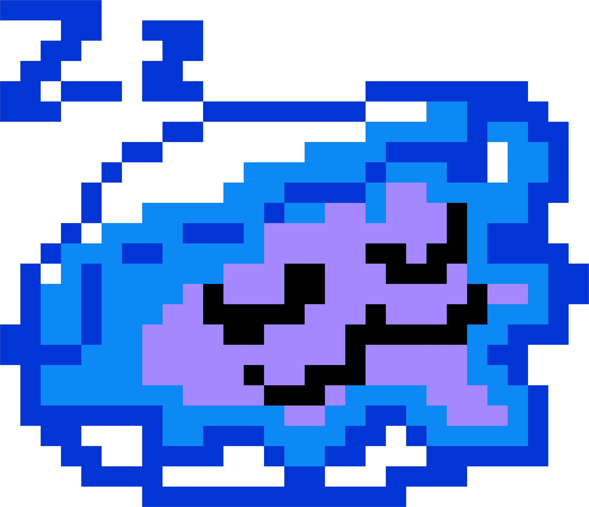

𓆉𓆝 𓆟 𓆞 𓆝 𓆟𓇼
˚｡⋆🦪🐚˚｡🦪⚪✨
⋆𓆉𓆝 𓆟 𓆞 𓆝 𓆟𓇼
New York’s oyster history dates back to the early 1600s, when Native American tribes were already enjoying the abundance of oysters in the region’s waters. European settlers quickly caught on, and oysters became a key part of the city’s diet and economy. By the 19th century, New York was the oyster capital of the world, with massive oyster beds in the New York Harbor and beyond. The bivalves were so plentiful that they were sold everywhere—from street vendors to upscale restaurants. Unfortunately, overharvesting and pollution led to the decline of oyster populations by the 20th century. However, recent efforts to restore oyster habitats have sparked a resurgence, making New York’s oysters a symbol of both the city’s history and its commitment to environmental revival. 🦪🌊
Oysters are nature’s water purifiers. A single oyster can filter up to 50 gallons of water a day, removing harmful particles, excess nutrients, and pollutants from the water, helping to improve water quality and prevent algae blooms that can suffocate marine life. Their filtration process is vital for maintaining healthy aquatic ecosystems. 🌊🐚
Oyster reefs act as natural barriers, protecting coastal areas from erosion and storm surges. By absorbing the force of waves, they help reduce shoreline damage, prevent flooding, and protect habitats for many species of marine life. This natural defense is crucial for maintaining the integrity of coastal ecosystems. 🌊🏖️
Oysters follow a fascinating sleep cycle. During the day, they open their shells to feed on plankton and tiny particles suspended in the water. At night, they close their shells and rest, conserving energy. This daily routine helps them efficiently filter water while maintaining a sustainable feeding schedule. 🦪💤
Oyster reefs provide essential habitats for a variety of marine creatures. The complex structure of their reefs creates a home for fish, crabs, and other species that rely on the shelter and protection of the oysters’ hard shells. These reefs boost biodiversity by offering a place for many organisms to thrive. ğŸ 🌿
Oysters play an unexpected role in the fight against climate change. As they grow, they absorb carbon dioxide from the water and use it to form their shells. This process helps sequester carbon, reducing the overall concentration of CO2 in the environment. Oysters, though small, are an important part of our carbon reduction efforts. 🌍🦪
By filtering large quantities of water, oysters improve water clarity. As they remove suspended particles and pollutants, they allow more sunlight to penetrate deeper into the water, which benefits underwater plants that rely on sunlight for photosynthesis. This contributes to the overall health of marine ecosystems by supporting plant life that sustains fish and other creatures. 🌿💧
Return to Top